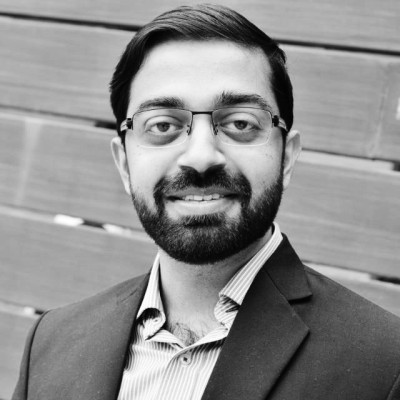

Lightpath QoT computation in optical networks assisted by transfer learning
52 citationsIhtesham Khan, Muhammad Bilal, Muhammad Umar Masood, et al. · Journal of Optical Communications and Networking (JOCN)

Postdoctoral researcher · Politecnico di Torino
Postdoctoral Researcher – AI-driven, resilient optical networks | Multi-band transport | Fiber sensing & fault detection
Ihtesham Khan, Muhammad Bilal, Muhammad Umar Masood, et al. · Journal of Optical Communications and Networking (JOCN)
Fehmida Usmani, Ihtesham Khan, Muhammad Umar Masood, et al. · Microwave and Optical Technology Letters
Ihtesham Khan, Lorenzo Tunesi, Muhammad Umar Masood, et al. · Optics Express
Ihtesham Khan, Lorenzo Tunesi, Muhammad Umar Masood, et al. · IEEE Open Journal of the Communications Society
Ihtesham Khan, Lorenzo Tunesi, Maryvonne Chalony, Muhammad Umar Masood, et al. · SPIE Photonics West
DET · Politecnico di Torino · Torino, Italy